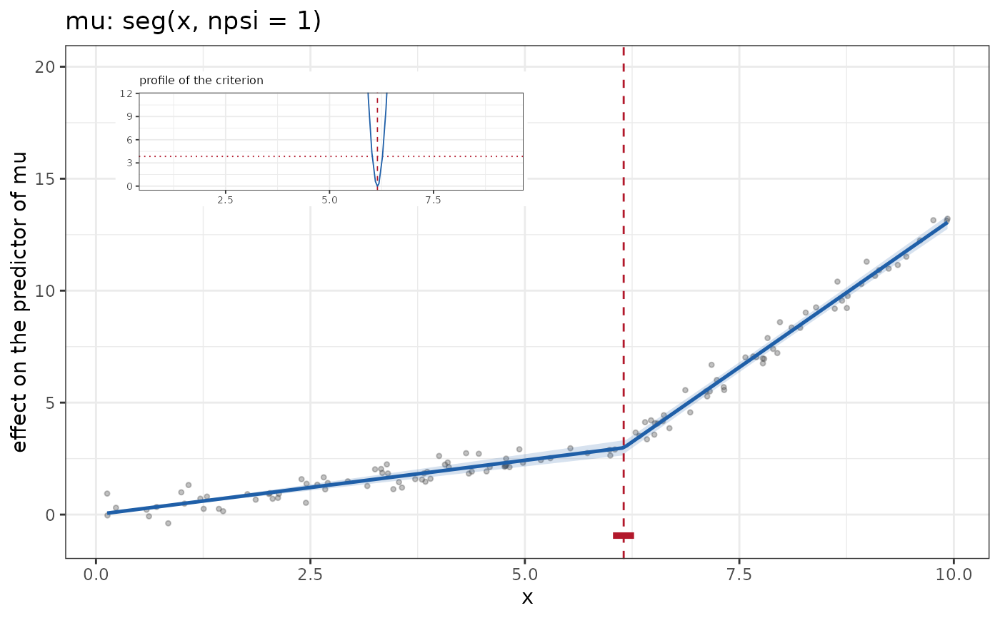
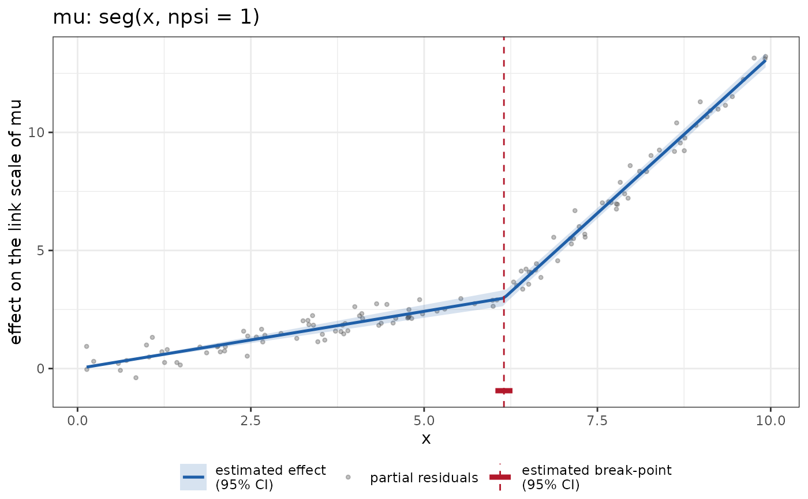

Selects the graph of a break-point term (modelterms7::seg(),
modelterms7::jump() or modelterms7::jseg()): the contribution of the
term as a function of its variable, with the partial residuals, each
break-point as a dashed vertical line, its confidence interval as a bar at
the bottom of the graph, and an inset with the profile of the criterion over
the position of the break-point.
Usage
plot_breakpoint(
profile = TRUE,
test = lr_test(),
level = 0.95,
vcov_type = bayesian_vcov(),
information = distributions7::expected_info(),
n_grid = 200,
n_profile = 100
)Arguments
- profile
Whether to draw the inset with the profile.
- test
A test object (
wald_test(),lr_test()and others), the test inverted for the interval of a break-point.- level
The confidence level of the band, of the intervals and of the cutoff of the profile.
- vcov_type
A vcov_method object, the variance of the band.
- information
An object from
distributions7::expected_info()(the default) ordistributions7::observed_info(), the weight of the working response.- n_grid
The number of points of the grid of the variable.
- n_profile
The number of positions at which the profile is computed.
Value
A PlotBreakpoint object, inheriting from term_plot.
Details
The contribution and its band are those of plot_effect() for a term whose
block moves with its coefficients: \(f(x) = \)
modelterms7::term_value() on a grid of the variable, and the band is
\(f(x) \pm z_{(1+\text{level})/2}\,\sqrt{J V J'}\), where \(J\) is the
block of modelterms7::term_predict() (the derivative of \(f\) in the
coefficients) and \(V\) the variance of the coefficients of the term.
The interval of a break-point of a modelterms7::seg() term is
confint(fit, parm, test = test, readable = FALSE) on its coefficient, so
that test = lr_test() inverts the likelihood ratio test of the position
and test = wald_test() gives the Wald interval. The position of a
modelterms7::jump() or modelterms7::jseg() term is read off other
coefficients and has no coordinate to invert a test on; its interval is
the set of positions, connected to the estimate, at which the profile
described below stays under the cutoff.
The profile is computed on the working response of the equation,
\(y_i^* = f(x_i) + s_i / w_i\), where \(s_i\) is the score of the
log-likelihood in the predictor and \(w_i\) the information selected by
information. For a position \(\psi_k\) on a grid, with the other
positions and the other terms of the equation at their fitted values,
\(R(\psi_k)\) is the weighted residual sum of squares of \(y^*\) on an
intercept, the linear column and the columns of the term, as computed by
modelterms7::seg_profile_rss(). The inset shows
\(R(\psi_k) - \min R\), the increase of the criterion in the units of the
log-likelihood, against the cutoff \(\chi^2_{1}(\text{level})\) (dotted
line). For a gaussian mean it is the likelihood ratio statistic; for other
families it is its quadratic approximation at the fit.
A term whose break-points are developed over covariates has one position per observation and no single profile, and a marginal break-point term has a distribution of positions per group; both signal an error.
Examples
set.seed(1)
dd <- data.frame(x = sort(runif(120, 0, 10)))
dd$y <- 1 + 0.5 * dd$x + 2 * pmax(dd$x - 6, 0) + rnorm(120, sd = 0.4)
fit <- statmod(y ~ seg(x, npsi = 1), distributions7::gaussian1_distrib(), dd)
ggplot2::autoplot(fit, term = "seg(x, npsi = 1)", data = dd)

ggplot2::autoplot(fit, term = "seg(x, npsi = 1)", data = dd,
type = plot_breakpoint(profile = FALSE,
test = wald_test()))
